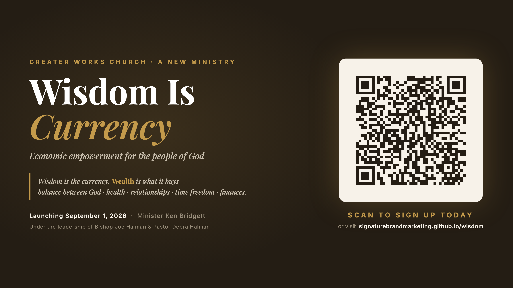

For Bishop Joe Halman & Pastor Debra Halman
A personal briefing from Minister Ken Bridgett · August 2026 · about a 3-minute read after the video
Start here — Minister Ken introduces the plan personally (4½ minutes).
Wisdom is the currency. Wealth is what it buys — and true wealth is balance: God, health, relationships, time freedom, and finances. We start with finances. We build all five.
The ministry is announced at Greater Works — sign-up opens the same day, right from the pews (the QR screen below). September 1: official launch and outreach begins.
Thirty days of foundation — weekly Zoom gatherings every Thursday at 7 PM (Sept 3, 10, 17, 24). Relationship first, teaching, and anticipation toward October 1.
The whole community walks seven days together, opening live on the Thursday-night gathering — October 1 falls on a Thursday, so the rhythm never breaks.
Visions go into motion through the four pillars — Start & Grow · Steward · Skill Up · Circulate — and at day 60, a full report comes back to you.
Five minutes of Scripture-anchored teaching, read slow.
One practical assignment — the actual doing.
One honest written answer, submitted daily.
The arc runs time → wisdom → ideas → vision. Participation is tracked daily, so no one walks alone — and by Day 7, every participant holds a written, workable vision.

The screen during the announcement — members scan and sign up from their seats.
"Greater works than these shall he do." — John 14:12
With your blessing, we build. Thank you for covering this.